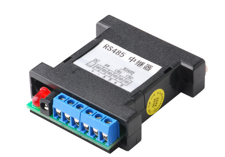

不同层次的网络连接设备
物理层：中继器（Repeater）和集线器（Hub）。用于连接物理特性相同的网段，这些网段，只是位置不同而已。Hub 的端口没有物理和逻辑地址。
逻辑链路层：网桥（Bridge）和交换机（Switch）。用于连接同一逻辑网络中、物理层规范不同的网段，这些网段的拓扑结构和其上的数据帧格式，都可以不同。Bridge和Switch的端口具有物理地址，但没有逻辑地址。
网络层：路由器（Router）。用于连接不同的逻辑网络。Router的每一个端口都有唯一的物理地址和逻辑地址。
应用层：网关（Gateway）。用于互连网络上，使用不同协议的应用程序之间的数据通信，目前尚无硬件产品。
计算机网络组成组件
在上图中，我们主要需要注意到的硬件有哪些呢？大致有底下这些啦：
- 节点 (node)：节点主要是具有网络地址 (IP) 的设备之称， 因此上面图示中的一般PC、Linux服务器、ADSL调制解调器与网络打印机等，个别都可以称为一个 node ！ 那中间那个集线器 (hub) 是不是节点呢？因为他不具有 IP ，因此 hub 不是节点。
- 服务器主机 (server)：就网络联机的方向来说，提供数据以『响应』给用户的主机， 都可以被称为是一部服务器。
- 工作站 (workstation) 或客户端 (client)：任何可以在计算机网络输入的设备都可以是工作站， 若以联机发起的方向来说，主动发起联机去『要求』数据的，就可以称为是客户端 (client)。举例来说，一般 PC 打开浏览器对 Yahoo 要求新闻数据，那一般 PC 就是客户端。
- 网络卡 (Network Interface Card, NIC)：内建或者是外插在主机上面的一个设备， 主要提供网络联机的卡片，目前大都使用具有 RJ-45 接头的以太网络卡。一般 node 上都具有一个以上的网络卡， 以达成网络联机的功能。
- 网络接口：利用软件设计出来的网络接口，主要在提供网络地址 (IP) 的任务。 一张网卡至少可以搭配一个以上的网络接口；而每部主机内部其实也都拥有一个内部的网络接口，那就是 loopback (lo) 这个循环测试接口！
- 网络形态或拓朴 (topology)：各个节点在网络上面的链接方式，一般讲的是物理连接方式。 举例来说，上图中显示的是一种被称为星形联机 (star) 的方式，主要是透过一个中间连接设备， 以放射状的方式连接各个节点的一种形态，这就是一种拓朴。
- 网关 (route) 或通讯闸 (gateway)：具有两个以上的网络接口， 可以连接两个以上不同的网段的设备，例如 IP 分享器就是一个常见的网关设备。那上面的 ADSL 调制解调器算不算网关呢？ 其实不太能算，因为调制解调器通常视为一个在主机内的网卡设备，我们可以在一般 PC 上面透过拨号软件， 将调制解调器仿真成为一张实体网卡 (ppp) ，因此他不太能算是网关设备啦！
中继器 Repeater

信号在传输过程中会不断衰减，为了不让信号衰减对通信产生影响，便有了中继器。仅做放大信号作用，把信号传到更远地方。一般情况下，中继器的两端连接的是相同的媒体，但有的中继器也可以完成不同媒体的转接工作。
中继器的优点
(1)扩大了通信距离，但代价是增加了一些存储转发延时。
(2)增加了节点的最大数目。
(3)各个网段可使用不同的通信速率。
(4)提高了可靠性。当网络出现故障时，一般只影响个别网段。
(5)性能得到改善。
当然，使用中继器也有一定的缺点，例如：
(1)由于中继器对收到被衰减的信号再生(恢复)到发送时的状态，并转发出去，增加了延时。
(2)CAN总线的MAC子层并没有流量控制功能。当网络上的负荷很重时，可能因中继器中缓冲区的存储空间不够而发生溢出，以致产生帧丢失的现象。
(3)中继器若出现故障，对相邻两个子网的工作都将产生影响。
以太网 Ethernet
在局域网络的环境中，我们最常使用的就是以太网络。 目前在以太网络上最常见到的接头就是 RJ-45 的网络接头。 以太网络的传输协议：CSMA/CD。
集线器 Hub

集线器属于数据通信系统中的基础设备，它与网卡、网线等传输介质一样，属于局域网中的基础设备，采用CSMA/CD（一种检测协议）介质访问控制机制。
集线器是一种网络共享媒体，如果每个设备只有一个对外接口，那么意味着只能建立一对点好点的通信。为了能够让通信“一对多”，需要将信号复制广播，于是，产生了集线器：把一个端口的信息重复广播到其它7个端口上（假设是8口HUB）。所以HUB也可以叫做multiport repeater。集线器不管有多少个端口，所有端口共享一条带宽。网络共享媒体在单一时间点内， 仅能被一部主机所使用。
那么以太网络的网卡之间是如何传输的呢？我们以下图A发给D为例：
CSMA/CD 搭配上述的环境，它的传输情况需要有以下的流程：
- 监听媒体使用情况 (Carrier Sense)：A 主机要发送网络封包前，需要先对网络媒体进行监听，确认没有人在使用后， 才能够发送出讯框；
- 多点传输 (Multiple Access)：A 主机所送出的数据会被集线器复制一份，然后传送给所有连接到此集线器的主机！ 也就是说， A 所送出的数据， B, C, D 三部计算机都能够接收的到！但由于目标是 D 主机，因此 B 与 C 会将此讯框数据丢弃，而 D 则会抓下来处理；
- 碰撞侦测 (Collision Detection)：该讯框数据附有检测能力，若其他主机例如 B 计算机也刚好在同时间发送讯框数据时， 那么 A 与 B 送出的数据碰撞在一块 (出车祸) ，此时这些讯框就是损毁，那么 A 与 B 就会各自随机等待一个时间， 然后重新透过第一步再传送一次该讯框数据。
集线器基本上不具有类似于交换机的”智能记忆”能力和”学习”能力。它也不具备交换机所具有的MAC地址表，所以它发送数据时都是没有针对性的，而是采用广播方式发送。也就是说当它要向某节点发送数据时，不是直接把数据发送到目的节点，而是把数据包发送到与集线器相连的所有节点。
MAC的封装格式
MAC(media access control)就是上面一直讲的讯框。
其中目的地址与来源地址指的就是网卡卡号（hardware address,硬件地址）。
网桥 Bridge
网桥（Bridge）是早期的两端口数据链路层网络设备，用来连接不同网段的计算机网络设备同时它又可隔离冲突域，因为它的两个端口不是共享一条背板总线（分别有一条独立的交换信道），比当时的集线器（Hub）性能更好（集线器上各端口都是共享同一条背板总线的）。后来，网桥被具有更多端口、同时也可隔离冲突域的交换机（Switch）所取代。
交换机 Switch
交换机（Switch）可以说同时是集线器和网桥的升级换代产品，因为交换机具有集线器一样的集中连接功能，同时它又具有网桥的数据交换功能。所以可以这样说，交换机是带有交换功能的集线器，或者说交换机是多端口的网桥。交换机与集线器最大的差别是，交换机内有一个内存，可以记录每个switch port 与其连接的PC的MAC地址。交换机内部的CPU会在每个端口成功连接时，通过ARP协议学习它的MAC地址，保存成一张ARP表。在今后的通讯中，发往该MAC地址的数据包将仅送往其对应的端口，而不是所有的端口。因此，交换机可用于划分数据链路层广播，即冲突域；但它不能划分网络层广播，即广播域。
工作原理与网桥类似，总结如下：
- 当交换机从某个端口收到一个数据帧后，先读取帧头部的源MAC 地址，并与自己缓存中的映射表（CAM 表）进行比较，如果没有找到，则在CAM 表中添加一个该源MAC 地址与发送该帧的源端口映射表项。这就是交换机的MAC 地址自动学习功能。
- 如果在CAM 表项查到了帧中源MAC 地址，则继续查看是否有帧中目的MAC 地址所对应的映射表项。如果有，则直接把该帧转发到目的MAC 地址节点所连接的交换机端口，然后由该端口发送到目的主机。
- 如果在交换机CAM 表中没有找到帧中目的MAC 地址所对应的表项，则把该数据帧向除源端口外的其他所有端口上进行泛洪。
- 当MAC 地址与帧中目的MAC 地致的主机接收了该数据帧后就会向源主机产生一个应答帧，交换机获取该应答帧后从其中的源MAC 地址中获取了对应的MAC 地址和所连接端口的映射关系，并添加到CAM 表中。这样下次再有MAC 地址为这个MAC 地址的帧发送时交换机就可以直接从CAM 表中找到对应的转发端口，直接转发，不用再泛洪了。
路由器 Router
路由器（Router）是用于连接多个逻辑上分开的网络，所谓逻辑网络是代表一个单独的网络或者一个子网。当数据从一个子网传输到另一个子网时，可通过路由器来完成。因此，路由器具有判断网络地址和选择路径的功能，它能在多网络互联环境中，建立灵活的连接，可用完全不同的数据分组和介质访问方法连接各种子网，路由器只接受源站或其他路由器的信息，属网络层的一种互联设备。它不关心各子网使用的硬件设备，但要求运行与网络层协议相一致的软件。
路由器的主要工作就是为经过路由器的每个数据帧寻找一条最佳传输路径，并将该数据有效地传送到目的站点。 路由器的基本功能是，把数据（IP 报文）传送到正确的网络，细分则包括：
IP 数据报的转发，包括数据报的寻径和传送；
- 子网隔离，抑制广播风暴；
- 维护路由表，并与其它路由器交换路由信息，这是 IP 报文转发的基础；
- IP 数据报的差错处理及简单的拥塞控制；
- 实现对 IP 数据报的过滤和记帐。
路由器构成了 Internet 的骨架。它的处理速度是网络通信的主要瓶颈之一，它的可靠性则直接影响着网络互连的质量。因此Internet 研究领域中，路由器技术始终处于核心地位。
网关 Gateway
网关(Gateway)又称网间连接器、协议转换器。网关在网络层以上实现网络互连，是最复杂的网络互连设备，仅用于两个高层协议不同的网络互连，网关既可以用于广域网互连，也可以用于局域网互连。
网关是用于连接网络层之上执行不同协议的子网，组成异构的互连网，网关能实现异构设备之间的通信，对不同的传输层、会话层、表示层、应用层协议进行翻译和变换。网关具有对不兼容的高层协议进行转换的功能。当连接两个完全不同结构的网络时，必须使用网关。网关工作在OSI模型的最高层应用层。网关的主要功能：把一种协议变成另一种协议，把一种数据格式变成另一种数据格式，把一种速率变成另一种速率，以求两者的统一。
网关和路由器最大的区别是是否连接相似的网络。如果连接相似的网络，则称为路由器。而连接不相似的网络，称为网关。相似的网络和不相似的网络有两种不同的含义。逻辑层面：相似的网络：如果都是互联网上的两个网络，我们称为相似的网络。不相似的网络：如果一个是私网，一个是公网。我们称为不相似的网络。物理层面：相似的网络：都是以太网或者同一种介质的网络。不相似的网络：一边是以太，一边是SDH或者ATM等。
【1】http://www.it610.com/article/2503528.htm
【2】https://wizardforcel.gitbooks.io/vbird-linux-server-3e/content/7.html
【3】https://www.tianmaying.com/tutorial/NetWorkInstrument